Глава 3. Основы ИНС
Упрощение
В прошлой главе я постоянно говорил о каких-то серьезных упрощениях. Причина упрощений заключается в том, что никакие современные компьютеры не могут быстро моделировать такие сложные системы, как наш мозг. К тому же, как я уже говорил, наш мозг переполнен различными биологическими механизмами, не относящиеся к обработке информации.
Нам нужна модель преобразования входного сигнала в нужный нам выходной. Все остальное нас не волнует. Начинаем упрощать.
Биологическая структура → схема
В предыдущей главе вы поняли, насколько сложно устроены биологические нейронные сети и биологические нейроны. Вместо изображения нейронов в виде чудовищ с щупальцами давайте просто будем рисовать схемы.
Вообще говоря, есть несколько способов графического изображения нейронных сетей и нейронов. Здесь мы будем изображать искусственные нейроны в виде кружков.
Вместо сложного переплетения входов и выходов будем использовать стрелки, обозначающие направление движения сигнала.
Таким образом искусственная нейронная сеть может быть представлена в виде совокупности кружков (искусственных нейронов), связанных стрелками.
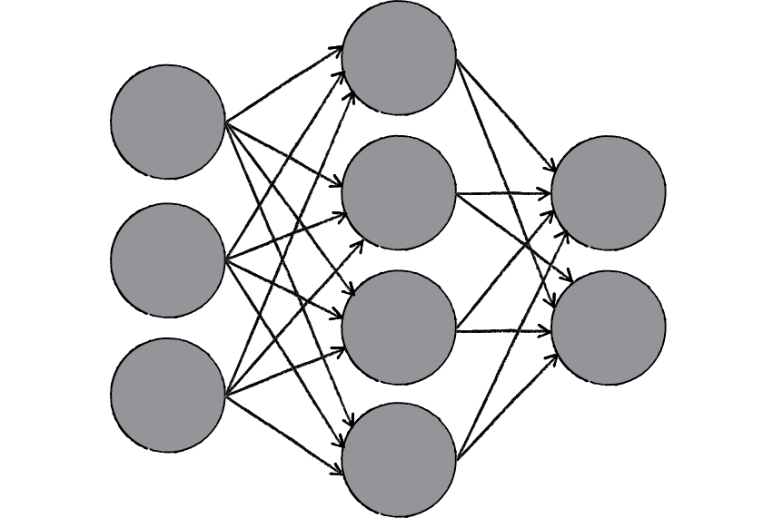
Электрические сигналы → числа
В реальной биологической нейронной сети от входов сети к выходам передается электрический сигнал. В процессе прохода по нейронной сети он может изменяться.
Электрический сигнал всегда будет электрическим сигналом. Концептуально ничего не изменяется. Но что же тогда меняется? Меняется величина этого электрического сигнала (сильнее/слабее). А любую величину всегда можно выразить числом (больше/меньше).
В нашей модели искусственной нейронной сети нам совершенно не нужно реализовывать поведение электрического сигнала, так как от его реализации все равно ничего зависеть не будет.
На входы сети мы будем подавать какие-то числа, символизирующие величины электрического сигнала, если бы он был. Эти числа будут продвигаться по сети и каким-то образом меняться. На выходе сети мы получим какое-то результирующее число, являющееся откликом сети.
Для удобства все равно будем называть наши числа, циркулирующие в сети, сигналами.
Синапсы → веса связей
Вспомним картинку из первой главы, на которой цветом были изображены связи между нейронами – синапсы. Синапсы могут усиливать или ослаблять проходящий по ним электрический сигнал.
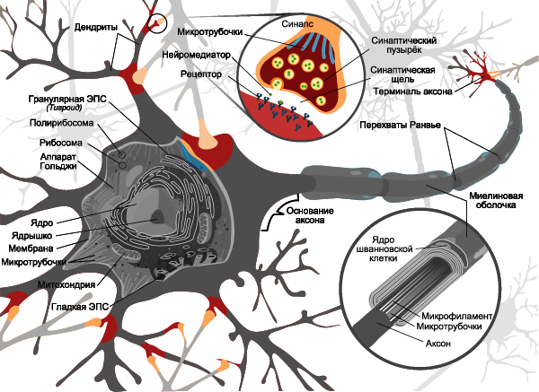
Давайте характеризовать каждую такую связь определенным числом, называемым весом данной связи. Сигнал, прошедший через данную связь, умножается на вес соответствующей связи.
Это ключевой момент в концепции искусственных нейронных сетей, я объясню его подробнее. Посмотрите на картинку ниже. Теперь каждой черной стрелке (связи) на этой картинке соответствует некоторое число wi (вес связи). И когда сигнал проходит по этой связи, его величина умножается на вес этой связи.
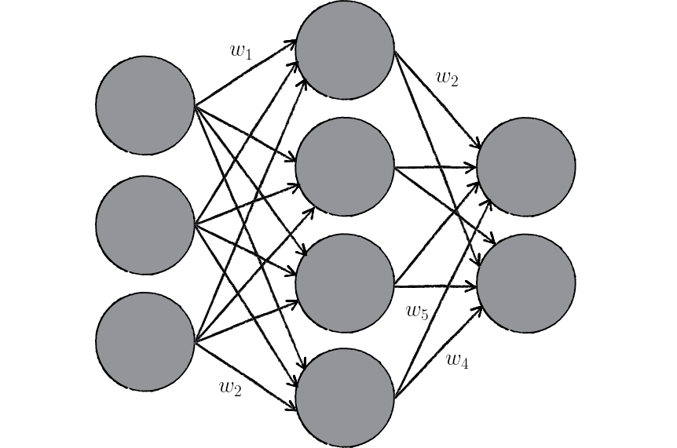
На приведенном выше рисунке вес стоит не у каждой связи лишь потому, что там нет места для обозначений. В реальности у каждой i-ой связи свой собственный wi-ый вес.
Искусственный нейрон
Теперь мы переходим к рассмотрению внутренней структуры искусственного нейрона и того, как он преобразует поступающий на его входы сигнал.
На рисунке ниже представлена полная модель искусственного нейрона.
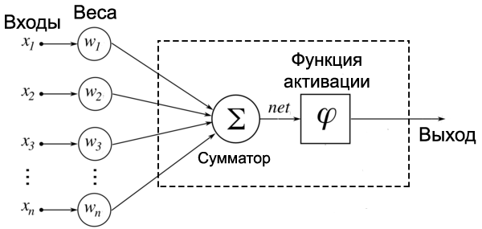
Не пугайтесь, ничего сложного здесь нет. Давайте рассмотрим все подробно слева направо.
Входы, веса и сумматор
У каждого нейрона, в том числе и у искусственного, должны быть какие-то входы, через которые он принимает сигнал. Мы уже вводили понятие весов, на которые умножаются сигналы, проходящие по связи. На картинке выше веса изображены кружками.
Поступившие на входы сигналы умножаются на свои веса. Сигнал первого входа x1 умножается на соответствующий этому входу вес w1. В итоге получаем x1w1. И так до n-ого входа. В итоге на последнем входе получаем xnwn.
Теперь все произведения передаются в сумматор. Уже исходя из его названия можно понять, что он делает. Он просто суммирует все входные сигналы, умноженные на соответствующие веса:
x1w1+x2w2+⋯+xnwn=∑i=1nxiwi
Когда необходимо коротко записать большое выражение, состоящее из суммы повторяющихся/однотипных членов, то используют знак сигмы.
Рассмотрим простейший вариант записи:
∑i=15i=1+2+3+4+5
Таким образом снизу сигмы мы присваиваем переменной-счетчику i стартовое значение, которое будет увеличиваться, пока не дойдет до верхней границы (в примере выше это 5).
Верхняя граница может быть и переменной. Приведу пример такого случая.
Пусть у нас есть n магазинов. У каждого магазина есть свой номер: от 1 до n. Каждый магазин приносит прибыль. Возьмем какой-то (неважно, какой) i-ый магазин. Прибыль от него равна pi.
Если мы хотим посчитать общую прибыль от всех магазинов (обозначим ее за P), то нам пришлось бы писать длинную сумму:
P=p1+p2+⋯+pi+⋯+pn
Как видно, все члены этой суммы однотипны. Тогда их можно коротко записать следующим образом:
P=∑i=1npi
Словами: «Просуммируй прибыли всех магазинов, начиная с первого и заканчивая n-ым». В виде формулы это гораздо проще, удобнее и красивее.
Результатом работы сумматора является число, называемое взвешенной суммой.
Взвешенная сумма (
Weighted sum) (
net) — сумма входных сигналов, умноженных на соответствующие им веса.
net=∑i=1nxiwi
Роль сумматора очевидна – он агрегирует все входные сигналы (которых может быть много) в какое-то одно число – взвешенную сумму, которая характеризует поступивший на нейрон сигнал в целом. Еще взвешенную сумму можно представить как степень общего возбуждения нейрона.
Пример
Для понимания роли последнего компонента искусственного нейрона – функции активации – я приведу аналогию.
Давайте рассмотрим один искусственный нейрон. Его задача – решить, ехать ли отдыхать на море. Для этого на его входы мы подаем различные данные. Пусть у нашего нейрона будет 4 входа:
- Стоимость поездки
- Какая на море погода
- Текущая обстановка с работой
- Будет ли на пляже закусочная
Все эти параметры будем характеризовать 0 или 1. Соответственно, если погода на море хорошая, то на этот вход подаем 1. И так со всеми остальными параметрами.
Если у нейрона есть четыре входа, то должно быть и четыре весовых коэффициента. В нашем примере весовые коэффициенты можно представить как показатели важности каждого входа, влияющие на общее решение нейрона. Веса входов распределим следующим образом:
- 5
- 4
- 1
- 1
Нетрудно заметить, что очень большую роль играют факторы стоимости и погоды на море (первые два входа). Они же и будут играть решающую роль при принятии нейроном решения.
Пусть на входы нашего нейрона мы подаем следующие сигналы:
- 1
- 0
- 0
- 1
Умножаем веса входов на сигналы соответствующих входов:
- 5
- 0
- 0
- 1
Взвешенная сумма для такого набора входных сигналов равна 6:
net=∑i=14xiwi=5+0+0+1=6
Все классно, но что делать дальше? Как нейрон должен решить, ехать на море или нет? Очевидно, нам нужно как-то преобразовать нашу взвешенную сумму и получить ответ.
Вот на сцену выходит функция активации.
Просто так подавать взвешенную сумму на выход достаточно бессмысленно. Нейрон должен как-то обработать ее и сформировать адекватный выходной сигнал. Именно для этих целей и используют функцию активации.
Она преобразует взвешенную сумму в какое-то число, которое и является выходом нейрона (выход нейрона обозначим переменной out).
Для разных типов искусственных нейронов используют самые разные функции активации. В общем случае их обозначают символом ϕ(net). Указание взвешенного сигнала в скобках означает, что функция активации принимает взвешенную сумму как параметр.
Функция активации (
Activation function)
(
ϕ(net)) — функция, принимающая взвешенную сумму как аргумент. Значение этой функции и является выходом нейрона (
out).
out=ϕ(net)
Далее мы подробно рассмотрим самые известные функции активации.
Функция единичного скачка
Самый простой вид функции активации. Выход нейрона может быть равен только 0 или 1. Если взвешенная сумма больше определенного порога b, то выход нейрона равен 1. Если ниже, то 0.
Как ее можно использовать? Предположим, что мы поедем на море только тогда, когда взвешенная сумма больше или равна 5. Значит наш порог равен 5:
b=5
В нашем примере взвешенная сумма равнялась 6, а значит выходной сигнал нашего нейрона равен 1. Итак, мы едем на море.
Однако если бы погода на море была бы плохой, а также поездка была бы очень дорогой, но имелась бы закусочная и обстановка с работой нормальная (входы: 0011), то взвешенная сумма равнялась бы 2, а значит выход нейрона равнялся бы 0. Итак, мы никуда не едем.
В общем, нейрон смотрит на взвешенную сумму и если она получается больше его порога, то нейрон выдает выходной сигнал, равный 1.
Графически эту функцию активации можно изобразить следующим образом.
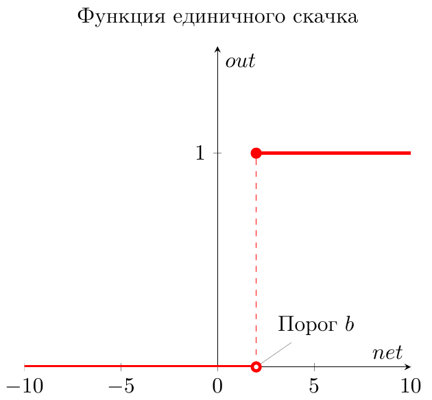
На горизонтальной оси расположены величины взвешенной суммы. На вертикальной оси — значения выходного сигнала. Как легко видеть, возможны только два значения выходного сигнала: 0 или 1. Причем 0 будет выдаваться всегда от минус бесконечности и вплоть до некоторого значения взвешенной суммы, называемого порогом. Если взвешенная сумма равна порогу или больше него, то функция выдает 1. Все предельно просто.
Теперь запишем эту функцию активации математически. Почти наверняка вы сталкивались с таким понятием, как составная функция. Это когда мы под одной функцией объединяем несколько правил, по которым рассчитывается ее значение. В виде составной функции функция единичного скачка будет выглядеть следующим образом:
out(net)={0,net<b1,net≥b
В этой записи нет ничего сложного. Выход нейрона (out) зависит от взвешенной суммы (net) следующим образом: если net (взвешенная сумма) меньше какого-то порога (b), то out (выход нейрона) равен 0. А если net больше или равен порогу b, то out равен 1.
Сигмоидальная функция
На самом деле существует целое семейство сигмоидальных функций, некоторые из которых применяют в качестве функции активации в искусственных нейронах.
Все эти функции обладают некоторыми очень полезными свойствами, ради которых их и применяют в нейронных сетях. Эти свойства станут очевидными после того, как вы увидите графики этих функций.
Итак… самая часто используемая в нейронных сетях сигмоида — логистическая функция.
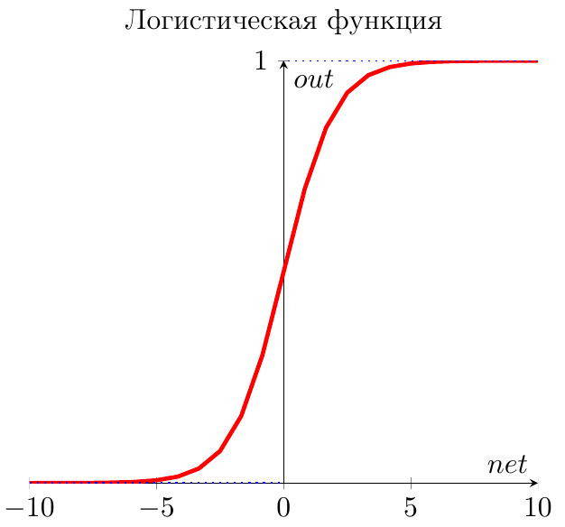
График этой функции выглядит достаточно просто. Если присмотреться, то можно увидеть некоторое подобие английской буквы S, откуда и пошло название семейства этих функций.
А вот так она записывается аналитически:
out(net)=11+exp(−a⋅net)
Что за параметр a? Это какое-то число, которое характеризует степень крутизны функции. Ниже представлены логистические функции с разным параметром a.
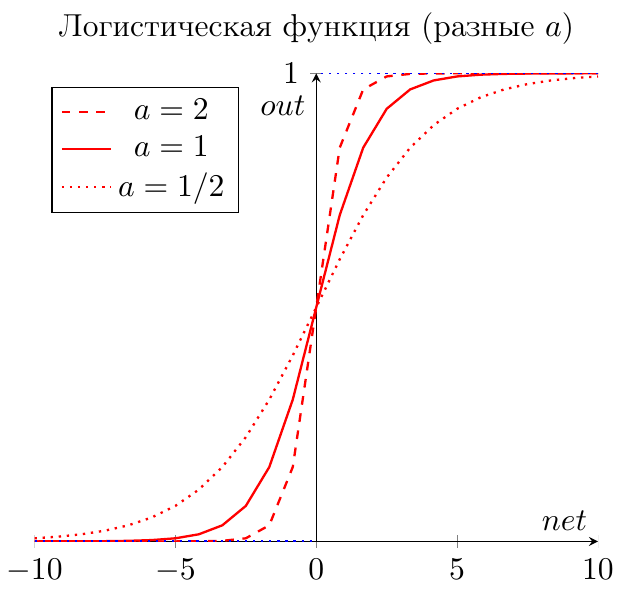
Вспомним наш искусственный нейрон, определяющий, надо ли ехать на море. В случае с функцией единичного скачка все было очевидно. Мы либо едем на море (1), либо нет (0).
Здесь же случай более приближенный к реальности. Мы до конца полностью не уверены (в особенности, если вы параноик) – стоит ли ехать? Тогда использование логистической функции в качестве функции активации приведет к тому, что вы будете получать цифру между 0 и 1. Причем чем больше взвешенная сумма, тем ближе выход будет к 1 (но никогда не будет точно ей равен). И наоборот, чем меньше взвешенная сумма, тем ближе выход нейрона будет к 0.
Например, выход нашего нейрона равен 0.8. Это значит, что он считает, что поехать на море все-таки стоит. Если бы его выход был бы равен 0.2, то это означает, что он почти наверняка против поездки на море.
Какие же замечательные свойства имеет логистическая функция?
- она является «сжимающей» функцией, то есть вне зависимости от аргумента (взвешенной суммы), выходной сигнал всегда будет в пределах от 0 до 1
- она более гибкая, чем функция единичного скачка – ее результатом может быть не только 0 и 1, но и любое число между ними
- во всех точках она имеет производную, и эта производная может быть выражена через эту же функцию
Именно из-за этих свойств логистическая функция чаще всего используются в качестве функции активации в искусственных нейронах.
Гиперболический тангенс
Однако есть и еще одна сигмоида – гиперболический тангенс. Он применяется в качестве функции активации биологами для более реалистичной модели нервной клетки.
Такая функция позволяет получить на выходе значения разных знаков (например, от -1 до 1), что может быть полезным для ряда сетей.
Функция записывается следующим образом:
out(net)=tanh(neta)
В данной выше формуле параметр a также определяет степень крутизны графика этой функции.
А вот так выглядит график этой функции.
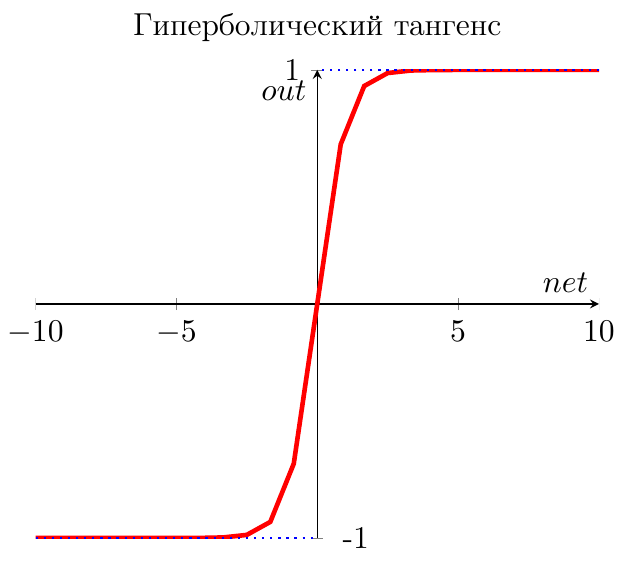
Как видите, он похож на график логистической функции. Гиперболический тангенс обладает всеми полезными свойствами, которые имеет и логистическая функция.
Что мы узнали?
Теперь вы получили полное представление о внутренней структуре искусственного нейрона. Я еще раз приведу краткое описание его работы.
У нейрона есть входы. На них подаются сигналы в виде чисел. Каждый вход имеет свой вес (тоже число). Сигналы на входе умножаются на соответствующие веса. Получаем набор «взвешенных» входных сигналов.
Далее этот набор попадает в сумматор, которой просто складывает все входные сигналы, помноженные на веса. Получившееся число называют взвешенной суммой.
Затем взвешенная сумма преобразуется функцией активации и мы получаем выход нейрона.
Сформулируем теперь самое короткое описание работы нейрона – его математическую модель:
Математическая модель искусственного нейрона с
n входами:
out=ϕ(∑i=1nxiwi)
где
ϕ – функция активации
∑i=1nxiwi – взвешенная сумма, как сумма n произведений входных сигналов на соответствующие веса.
Виды ИНС
Мы разобрались со структурой искусственного нейрона. Искусственные нейронные сети состоят из совокупности искусственных нейронов. Возникает логичный вопрос – а как располагать/соединять друг с другом эти самые искусственные нейроны?
Как правило, в большинстве нейронных сетей есть так называемый входной слой, который выполняет только одну задачу – распределение входных сигналов остальным нейронам. Нейроны этого слоя не производят никаких вычислений.
А дальше начинаются различия…
Однослойные нейронные сети
В однослойных нейронных сетях сигналы с входного слоя сразу подаются на выходной слой. Он производит необходимые вычисления, результаты которых сразу подаются на выходы.
Выглядит однослойная нейронная сеть следующим образом:
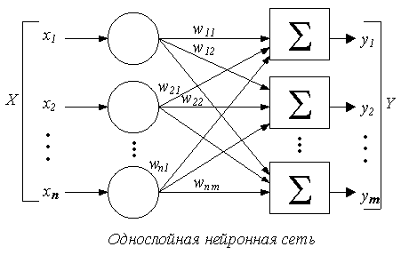
На этой картинке входной слой обозначен кружками (он не считается за слой нейронной сети), а справа расположен слой обычных нейронов.
Нейроны соединены друг с другом стрелками. Над стрелками расположены веса соответствующих связей (весовые коэффициенты).
Однослойная нейронная сеть (Single-layer neural network) — сеть, в которой сигналы от входного слоя сразу подаются на выходной слой, который и преобразует сигнал и сразу же выдает ответ.
Многослойные нейронные сети
Такие сети, помимо входного и выходного слоев нейронов, характеризуются еще и скрытым слоем (слоями). Понять их расположение просто – эти слои находятся между входным и выходным слоями.
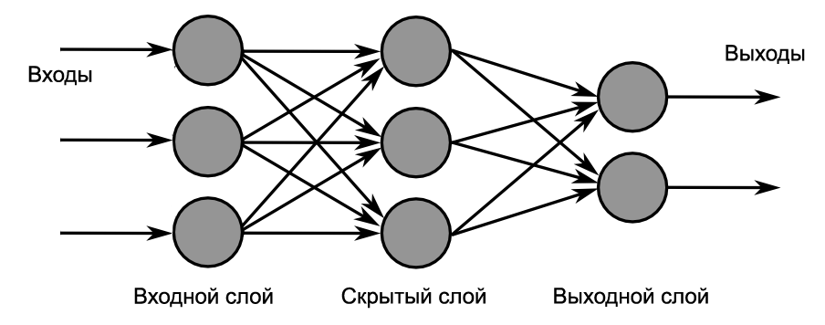
Такая структура нейронных сетей копирует многослойную структуру определенных отделов мозга.
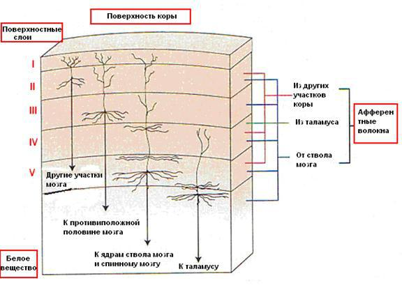
Название скрытый слой получил неслучайно. Дело в том, что только относительно недавно были разработаны методы обучения нейронов скрытого слоя. До этого обходились только однослойными нейросетями.
Многослойные нейронные сети обладают гораздо большими возможностями, чем однослойные.
Работу скрытых слоев нейронов можно сравнить с работой большого завода. Продукт (выходной сигнал) на заводе собирается по стадиям. После каждого станка получается какой-то промежуточный результат. Скрытые слои тоже преобразуют входные сигналы в некоторые промежуточные результаты.
Многослойная нейронная сеть (Multilayer neural network) — нейронная сеть, состоящая из входного, выходного и расположенного(ых) между ними одного (нескольких) скрытых слоев нейронов.
Сети прямого распространения
Можно заметить одну очень интересную деталь на картинках нейросетей в примерах выше.
Во всех примерах стрелки строго идут слева направо, то есть сигнал в таких сетях идет строго от входного слоя к выходному.
Сети прямого распространения (Feedforward neural network) (feedforward сети) — искусственные нейронные сети, в которых сигнал распространяется строго от входного слоя к выходному. В обратном направлении сигнал не распространяется.
Такие сети широко используются и вполне успешно решают определенный класс задач: прогнозирование, кластеризация и распознавание.
Однако никто не запрещает сигналу идти и в обратную сторону.
Сети с обратными связями
В сетях такого типа сигнал может идти и в обратную сторону. В чем преимущество?
Дело в том, что в сетях прямого распространения выход сети определяется входным сигналом и весовыми коэффициентами при искусственных нейронах.
А в сетях с обратными связями выходы нейронов могут возвращаться на входы. Это означает, что выход какого-нибудь нейрона определяется не только его весами и входным сигналом, но еще и предыдущими выходами (так как они снова вернулись на входы).
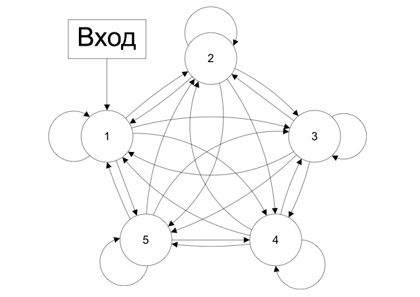
Возможность сигналов циркулировать в сети открывает новые, удивительные возможности нейронных сетей. С помощью таких сетей можно создавать нейросети, восстанавливающие или дополняющие сигналы. Другими словами такие нейросети имеют свойства кратковременной памяти (как у человека).
Сети с обратными связями (Recurrent neural network) — искусственные нейронные сети, в которых выход нейрона может вновь подаваться на его вход. В более общем случае это означает возможность распространения сигнала от выходов к входам.
Обучение нейронной сети
Теперь давайте чуть более подробно рассмотрим вопрос обучения нейронной сети. Что это такое? И каким образом это происходит?
Что такое обучение сети?
Искусственная нейронная сеть – это совокупность искусственных нейронов. Теперь давайте возьмем, например, 100 нейронов и соединим их друг с другом. Ясно, что при подаче сигнала на вход, мы получим что-то бессмысленное на выходе.
Значит нам надо менять какие-то параметры сети до тех пор, пока входной сигнал не преобразуется в нужный нам выходной.
Что мы можем менять в нейронной сети?
Изменять общее количество искусственных нейронов бессмысленно по двум причинам. Во-первых, увеличение количества вычислительных элементов в целом лишь делает систему тяжеловеснее и избыточнее. Во-вторых, если вы соберете 1000 дураков вместо 100, то они все-равно не смогут правильно ответить на вопрос.
Сумматор изменить не получится, так как он выполняет одну жестко заданную функцию – складывать. Если мы его заменим на что-то или вообще уберем, то это вообще уже не будет искусственным нейроном.
Если менять у каждого нейрона функцию активации, то мы получим слишком разношерстную и неконтролируемую нейронную сеть. К тому же, в большинстве случаев нейроны в нейронных сетях одного типа. То есть они все имеют одну и ту же функцию активации.
Остается только один вариант – менять веса связей.
Обучение нейронной сети (Training) — поиск такого набора весовых коэффициентов, при котором входной сигнал после прохода по сети преобразуется в нужный нам выходной.
Такой подход к термину «обучение нейронной сети» соответствует и биологическим нейросетям. Наш мозг состоит из огромного количества связанных друг с другом нейросетей. Каждая из них в отдельности состоит из нейронов одного типа (функция активации одинаковая). Мы обучаемся благодаря изменению синапсов – элементов, которые усиливают/ослабляют входной сигнал.
Однако есть еще один важный момент. Если обучать сеть, используя только один входной сигнал, то сеть просто «запомнит правильный ответ». Со стороны будет казаться, что она очень быстро «обучилась». И как только вы подадите немного измененный сигнал, ожидая увидеть правильный ответ, то сеть выдаст бессмыслицу.
В самом деле, зачем нам сеть, определяющая лицо только на одном фото. Мы ждем от сети способности обобщать какие-то признаки и узнавать лица и на других фотографиях тоже.
Именно с этой целью и создаются обучающие выборки.
Обучающая выборка (Training set) — конечный набор входных сигналов (иногда вместе с правильными выходными сигналами), по которым происходит обучение сети.
После обучения сети, то есть когда сеть выдает корректные результаты для всех входных сигналов из обучающей выборки, ее можно использовать на практике.
Однако прежде чем пускать свежеиспеченную нейросеть в бой, часто производят оценку качества ее работы на так называемой тестовой выборке.
Тестовая выборка (Testing set) — конечный набор входных сигналов (иногда вместе с правильными выходными сигналами), по которым происходит оценка качества работы сети.
Мы поняли, что такое «обучение сети» – подбор правильного набора весов. Теперь возникает вопрос – а как можно обучать сеть? В самом общем случае есть два подхода, приводящие к разным результатам: обучение с учителем и обучение без учителя.
Обучение с учителем
Суть данного подхода заключается в том, что вы даете на вход сигнал, смотрите на ответ сети, а затем сравниваете его с уже готовым, правильным ответом.
Важный момент. Не путайте правильные ответы и известный алгоритм решения! Вы можете обвести пальцем лицо на фото (правильный ответ), но не сможете сказать, как это сделали (известный алгоритм). Тут такая же ситуация.
Затем, с помощью специальных алгоритмов, вы меняете веса связей нейронной сети и снова даете ей входной сигнал. Сравниваете ее ответ с правильным и повторяете этот процесс до тех пор, пока сеть не начнет отвечать с приемлемой точностью (как я говорил в 1 главе, однозначно точных ответов сеть давать не может).
Обучение с учителем (Supervised learning) — вид обучения сети, при котором ее веса меняются так, чтобы ответы сети минимально отличались от уже готовых правильных ответов.
Где взять правильные ответы?
Если мы хотим, чтобы сеть узнавала лица, мы можем создать обучающую выборку на 1000 фотографий (входные сигналы) и самостоятельно выделить на ней лица (правильные ответы).
Если мы хотим, чтобы сеть прогнозировала рост/падение цен, то обучающую выборку надо делать, основываясь на прошлых данных. В качестве входных сигналов можно брать определенные дни, общее состояние рынка и другие параметры. А в качестве правильных ответов – рост и падение цены в те дни.
И так далее…
Стоит отметить, что учитель, конечно же, не обязательно человек. Дело в том, что порой сеть приходится тренировать часами и днями, совершая тысячи и десятки тысяч попыток. В 99% случаев эту роль выполняет компьютер, а точнее, специальная компьютерная программа.
Обучение без учителя
Обучение без учителя применяют тогда, когда у нас нет правильных ответов на входные сигналы. В этом случае вся обучающая выборка состоит из набора входных сигналов.
Что же происходит при таком обучении сети? Оказывается, что при таком «обучении» сеть начинает выделять классы подаваемых на вход сигналов. Короче говоря – сеть начинает кластеризацию.
Например, вы демонстрируете сети конфеты, пирожные и торты. Вы никак не регулируете работу сети. Вы просто подаете на ее входы данные о данном объекте. Со временем сеть начнет выдавать сигналы трех разных типов, которые и отвечают за объекты на входе.
Обучение без учителя (Unsupervised learning) — вид обучения сети, при котором сеть самостоятельно классифицирует входные сигналы. Правильные (эталонные) выходные сигналы не демонстрируются.
Выводы
В этой главе вы узнали все о структуре искусственного нейрона, а также получили полное представление о том, как он работает (и о его математической модели).
Более того, вы теперь знаете о различных видах искусственных нейронных сетей: однослойные, многослойные, а также feedforward сети и сети с обратными связями.
Вы также ознакомились с тем, что представляет собой обучение сети с учителем и без учителя.
Вы уже знаете необходимую теорию. Последующие главы – рассмотрение конкретных видов нейронных сетей, конкретные алгоритмы их обучения и практика программирования.
Вопросы и задачи
Материал этой главы надо знать очень хорошо, так как в ней содержатся основные теоретические сведения по искусственным нейронным сетям. Обязательно добейтесь уверенных и правильных ответов на все нижеприведенные вопросы и задачи.
Опишите упрощения ИНС по сравнению с биологическими нейросетями.
1. Сложную и запутанную структуру биологических нейронных сетей упрощают и представляют в виде схем. Оставляют только модель обработки сигнала.
2. Природа электрических сигналов в нейронных сетях одна и та же. Разница только в их величине. Убираем электрические сигналы, а вместо них используем числа, обозначающие величину проходящего сигнала.
3. Синапсы упрощаем до обычных чисел (весов связей), характеризующих связи между нейронами. Проходящий по связи сигнал просто умножается на вес этой связи.
Из каких элементов состоит искусственный нейрон?
Искусственный нейрон состоит из входов, весовых коэффициентов, соответствующих этим входам, сумматора и функции активации.
Что такое взвешенная сумма? Какой компонент искусственного нейрона ее вычисляет?
Взвешенной суммой называют сумму всех входов, умноженных на соответствующие весовые коэффициенты. Обычно ее обозначают за
net.
Взвешенную сумму вычисляет сумматор искусственного нейрона.
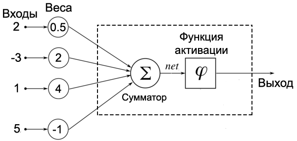
Вычислите взвешенную сумму нейрона (рисунок выше)
У данного нейрона 4 входа и 4 весовых коэффициента. Используем формулу расчета взвешенной суммы:
∑i=14xiwi=2⋅0.5+(−3)⋅2+1⋅4+5⋅(−1)=−6
Значит net=−6
Что такое функция активации?
Функция активации – функция, преобразующая взвешенную сумму в выходной сигнал нейрона. Для разных целей используют разные функции активации, но чаще всего: функцию единичного скачка и различные сигмоиды.
Функцию активации часто обозначают за ϕ(net).
Запишите математическую модель искусственного нейрона.
Искусственный нейрон c
n входами преобразовывает входной сигнал (число) в выходной сигнал (число) следующим образом:
out=ϕ(∑i=1nxiwi)
Чем отличаются однослойные и многослойные нейронные сети?
Однослойные нейронные сети состоят из одного вычислительного слоя нейронов. Входной слой подает сигналы сразу на выходной слой, который и преобразует сигнал, и сразу выдает результат.
Многослойные нейронные сети, помимо входного и выходного слоев, имеют еще и скрытые слои. Эти скрытые слои проводят какие-то внутренние промежуточные преобразования, наподобие этапов производства продуктов на заводе.
В чем отличие feedforward сетей от сетей с обратными связями?
Сети прямого распространения (feedforward сети) допускают прохождение сигнала только в одном направлении – от входов к выходам. Сети с обратными связями данных ограничений не имеют, и выходы нейронов могут вновь подаваться на входы.
Что такое обучающая выборка? В чем ее смысл?
Перед тем, как использовать сеть на практике (например, для решения текущих задач, ответов на которые у вас нет), необходимо собрать коллекцию задач с готовыми ответами, на которой и тренировать сеть. Это коллекция и называется обучающей выборкой.
Если собрать слишком маленький набор входных и выходных сигналов, то сеть просто запомнит ответы и цель обучения не будет достигнута.
Что понимают под обучением сети?
Под обучением сети понимают процесс изменения весовых коэффициентов искусственных нейронов сети с целью подобрать такую их комбинацию, которая преобразует входной сигнал в корректный выходной.
Что такое обучение с учителем и без него?
При обучении сети с учителем ей на входы подают сигналы, а затем сравнивают ее выход с заранее известным правильным выходом. Этот процесс повторяют до тех пор, пока не будет достигнута необходимая точность ответов.
Если сети только подают входные сигналы, без сравнения их с готовыми выходами, то сеть начинает самостоятельную классификацию этих входных сигналов. Другими словами она выполняет кластеризацию входных сигналов. Такое обучение называют обучением без учителя.